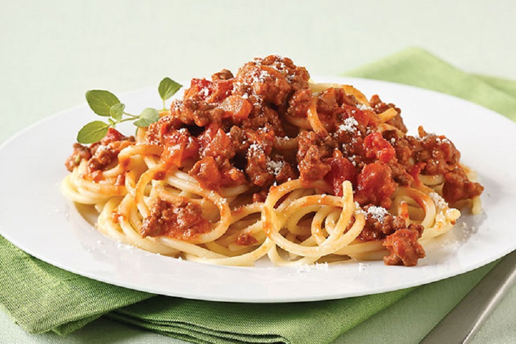
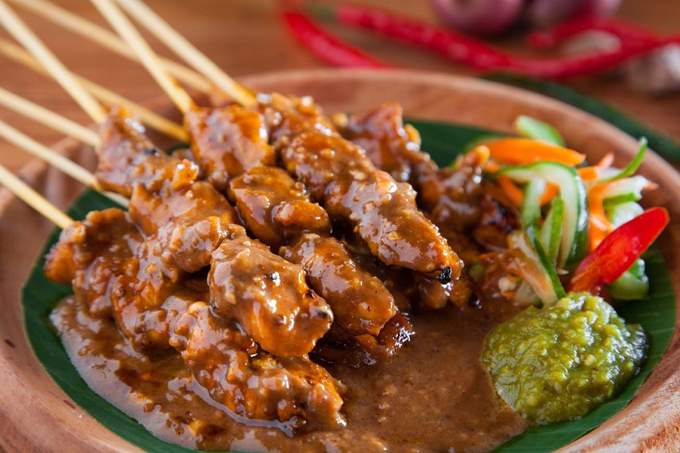

Username
Today's Recommendations
Tenderloin steaks are best cooked hot and fast and benefit from their time on the grill. Hot and fast means exactly that. This is the sort of steak that should be charred on the surface, and its temperature should be no more than medium in the middle. Marinades are usually not required as long as you do not overcook the meat. You can add a little additional flavor in the form of a spice rub.
Scrambled eggs is one of the fastest, easiest and tastiest dishes to make. Getting them creamy and fluffy used to be something only cafes could do but if you follow this step-by-step guide you will get perfect scrambled eggs, every time. The best way to do scrambled eggs is in a frying pan on a low heat on the stove top. If the pan is too hot the eggs will cook too quickly and rather than be lovely and light, they will develop a rubbery texture.

Everyone needs a great everyday Spaghetti Bolognese recipe, and this is mine! The Bolognese Sauce is rich, thick and has beautiful depth of flavour. It’s perfect for a quick midweek meal though if you have the time to simmer this Meat Sauce for a couple of hours, you’ll take it from seriously delish to OMG this is amazing!!

Satay is a popular Southeast Asian street food that usually involves a marinated meat being skewered and grilled, then served with a simple saucy dip. We're using flavorful chicken thigh meat here, but you can substitute anything from breast meat, to pork or beef, to even tofu and vegetables, though cooking times will vary. And that peanut sauce? It's the ultimate wingman to satay, containing all the fragrant notes of lemongrass, coconut, fish sauce, and fresh lime zest.